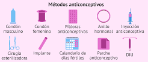

Prevención de ITS y embarazos
Prevención de infecciones de transmisión sexual
-
Métodos de barrera:
El preservativo masculino y el preservativo femenino son métodos que ayudan a prevenir la transmisión de muchas ITS, como el VIH, la sífilis, la gonorrea y la clamidia, al reducir el contacto con fluidos y lesiones. Las barreras bucales también se utilizan durante el sexo oral.
-
Vacunación:
Existen vacunas gratuitas y recomendadas para prevenir infecciones específicas, como las causadas por el virus del papiloma humano (VPH) y la hepatitis B.
-
Pruebas y diagnóstico precoz:
Realizarse controles periódicos de ITS es fundamental, ya que muchas infecciones, como la clamidia y la gonorrea, pueden no presentar síntomas.
Prevención de embarazos no planificados
-
Métodos anticonceptivos eficaces:
Para prevenir un embarazo, existen diferentes métodos anticonceptivos, como los hormonales (pastillas, inyecciones e implantes), los dispositivos intrauterinos (DIU) y la anticoncepción de emergencia.
-
Doble protección:
Los anticonceptivos hormonales y el DIU no protegen contra las ITS. Por este motivo, se recomienda utilizar doble protección, es decir, combinar un método anticonceptivo con el uso del preservativo.
Imagen de métodos anticonceptivos
